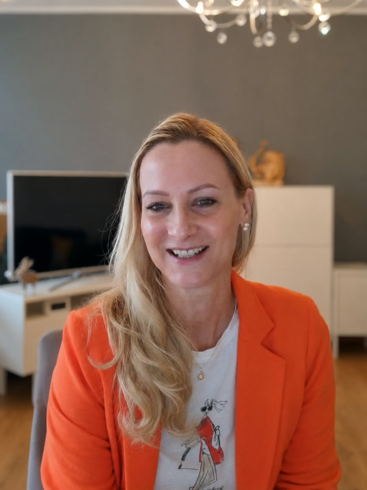

Du isst gesund. Aber kommen die Nährstoffe an?
Warum die Darmgesundheit entscheidend sein kann – und weshalb „einfach mehr Vitamine“ nicht automatisch mehr Energie bedeutet.
Darm & NährstoffeDu bist müde, ausgelaugt, ständig erkältet – und beim Arzt ist angeblich alles in Ordnung? Vielleicht wurde bisher nur nach einzelnen Werten gesucht. Nicht nach dem Zusammenhang.
Nur live. Als Bonus für Live-Teilnehmerinnen: Lanas Report „Die 6 Leistungsbremsen“.
Du schläfst genug und bist trotzdem erschöpft. Du ernährst dich gesund und fühlst dich trotzdem nicht fit. Du probierst Vitamine, Kuren und Ernährungstipps – doch dein Körper spielt nicht mit.
Dann ist dieses Webinar für dich →Dein Blutbild: jeder Wert im Normbereich.
Laut LaborErschöpft, aufgebläht, unkonzentriert, ausgebremst.
Dein GefühlDas Problem ist nicht, dass du zu wenig ausprobiert hast. Vielleicht fehlt der Blick aufs Ganze.
Den Zusammenhang verstehen →So wird meist geschaut: jeder Wert für sich, jeder im Normbereich. Scroll weiter.
Warum der Fehler meist nicht auffällt
Ein Standard-Blutbild prüft jeden Wert einzeln gegen einen breiten Normbereich. Ferritin 21 gilt als „normal“ – Lana stuft bei Frauen aber erst ab 50 als ausreichend ein.
Ob Nährstoffe überhaupt ankommen, entscheidet der Darm. Das zeigt dir kein Blutbild.
Cortisol und Sexualhormone schwanken über den Tag. Ein einzelner Messwert sagt wenig über deinen Rhythmus.
Magnesium, Zink und Co. werden meist einzeln angeschaut. Entscheidend ist aber ihr Verhältnis zueinander.
Zähne und Kiefer gehören zur Gesundheit dazu – werden bei Müdigkeit aber fast nie mitgedacht.
120 Minuten, in denen Lana die Puzzleteile zusammensetzt – direkt und verständlich.
Warum die Darmgesundheit entscheidend sein kann – und weshalb „einfach mehr Vitamine“ nicht automatisch mehr Energie bedeutet.
Darm & NährstoffeWelche wiederkehrenden Blockaden Lana und ihr Team bei der Auswertung ihrer Laboranalysen immer wieder identifizieren.
5 BlockadenWarum isolierte Normalwerte nicht das Gesamtbild zeigen – und wie Blut-, Darm- und Hormondaten zusammen verstanden werden.
8 VitalitätsmarkerEin Ferritinwert von 21 gilt im Labor als „normal“. Lana Kern stuft Werte unter 50 bei Frauen aber als zu niedrig ein. Schieb den Regler auf deinen Wert und sieh den Unterschied.
Werte aus Lana Kerns eigener Gegenüberstellung von Normal- und Optimalwerten. Keine Diagnose – im Webinar erfährst du, wie die Werte zusammenhängen.
Du meldest dich an und bekommst sofort deine Bestätigung mit Kalendereintrag.
Wir erinnern dich, damit du den Live-Termin nicht verpasst.
Rund 120 Minuten, nur live – es gibt keine Aufzeichnung.
Warum gesund essen allein nicht reicht, die 5 häufigsten Energieräuber und welche Werte zusammen über deine Energie entscheiden.
Lana beantwortet deine Fragen live. Nur wer dabei ist, erhält das exklusive Geschenk.
Lana ist staatlich geprüfte Ernährungsberaterin und hat selbst zehn Jahre lang „Ihre Werte sind normal“ gehört. Gemeinsam mit ihrem Expertenteam betrachtet sie Blutwerte, Hormone und Darm nicht isoliert, sondern als zusammenhängendes System.
„Meine Erwartungen wurden weit übertroffen. Meine Haare sprießen, wachsen und glänzen. Die Verdauung ist regelmäßig jeden Tag.“
„Mehr Professionalität und Feingefühl hätte ich mir nicht wünschen können. Zu jeder Zeit zeigen sie Interesse an den individuellen Ergebnissen.“
„Mit Abstand das Beste, was mir hätte passieren können. Eine ganzheitliche Gesundheitsreise, die mit so viel Liebe aufgebaut ist.“
„Ich habe endlich verstanden, wie die verschiedenen Bereiche meines Körpers zusammenhängen. Es war eine super Investition für mein Leben.“

Lucia, 47Echte Erfahrungen von lanakern.de. Da jeder Mensch individuell ist, können Ergebnisse variieren.
Als einmaliger Bonus zur Live-Teilnahme erwartet dich Lanas brandneuer Report „Die 6 Leistungsbremsen“.
Webinar + Bonus sichern →Trag Vorname und E-Mail ein. Das dauert 30 Sekunden und ist kostenlos. Deine Zugangsdaten kommen per E-Mail.
Sonntag, 11 Uhr: rund 120 Minuten mit Lana, inklusive Fragerunde. Als Live-Teilnehmerin erhältst du den Report „Die 6 Leistungsbremsen“.
Willst du danach wissen, wo dein Körper steht? Mit dem kostenlosen Gesundheitscheck ordnet ein Experte aus Lanas Team deine Angaben ein. Ob du danach eine Begleitung möchtest, entscheidest du.
Ja, zu 100 %. Du brauchst nur deinen Vornamen und deine E-Mail-Adresse.
Nein. Das Webinar findet nur live statt – dafür kannst du in der Fragerunde direkt deine Fragen stellen. Live-Teilnehmerinnen erhalten außerdem Lanas Report „Die 6 Leistungsbremsen“.
Ja. Lana erklärt komplexe Zusammenhänge so, dass du sie sofort verstehst – ohne Fachchinesisch.
Gerade dann. Du erfährst, warum Nährstoffe oft nicht dort ankommen, wo sie gebraucht werden.
Weil eine Betrachtung einzelner Laborwerte nicht automatisch alle Zusammenhänge zwischen Darm, Hormonen und Nährstoffen zeigt. Genau um diesen „Silo-Fehler“ geht es im Webinar.
Rund 120 Minuten inklusive Fragerunde.
Sonntag, 11:00 Uhr · live · kostenlos · keine Aufzeichnung
Jetzt kostenfreies Ticket sichern →